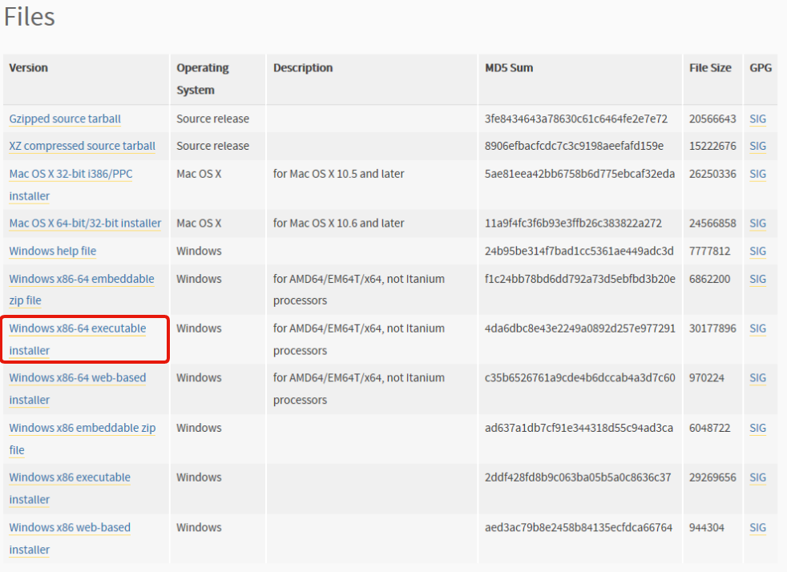
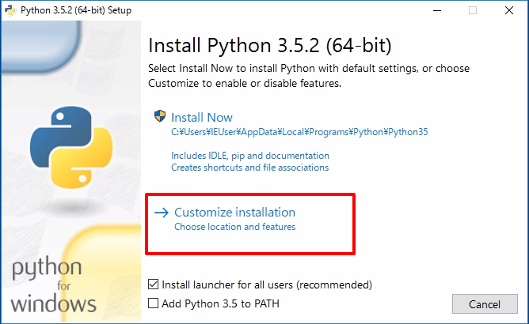
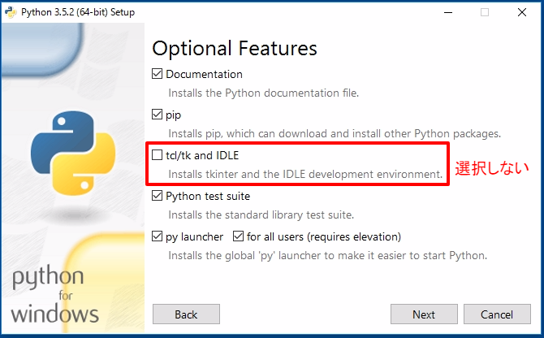
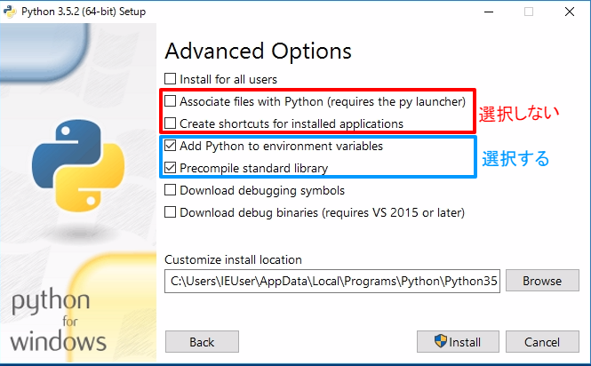
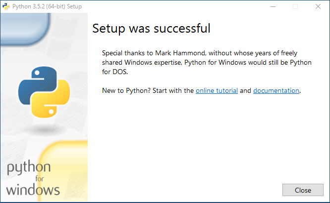

For Windows
ターミナルソフトの導入
Python インタプリタを触るときに， ターミナル（端末，プロンプト，CLI） というソフトウェアがあると便利です†1．
まだ用意していない人は，Tips | Windows でオススメのターミナル環境 を見てください．
Python for Windows のインストール
Python Releases for Windows の Latest Python 3 Release へ移動します（2016/10/9 現在 Python 3.5.2）．
ページ下に，Windows x86-64 executable installer があるのでダウンロードします．

ダウンロードしたインストーラーを起動して， Custom installation へ進みます．

td/tk and IDLE は，今回使わないので選択しません． それ以外はすべて選択します．

最後に，次の図のように選択します．
- 選択しない
- Associate files with Python
- Create shortcuts for installed applications
- 選択する
- Add Python to environment variables
- Precompile standard library

これで無事にインストールできました．

エイリアスの設定
この講義では， python3 と pip3 コマンドを使います．
Windows版では，それらの代わりに py -3 コマンドを使います†2．
このあとの講義をスムーズに進めるために，エイリアスの設定をします．
~/.bash_aliases に次の行を 追記します．
alias python3='py -3'
alias pip3='py -3 -m pip'
設定が終わったあと， exec $SHELL -l もしくは ターミナルを再起動 します．
さいごに，正常にエイリアス設定ができているか確認しましょう．
$ command -V python3
python3 は `py -3' のエイリアスです
$ command -V pip3
python3 は `py -3 -m pip' のエイリアスです
†1. Ref. Tips | ターミナルソフト ↩
†2. Ref. Tips | Python のバージョン ↩